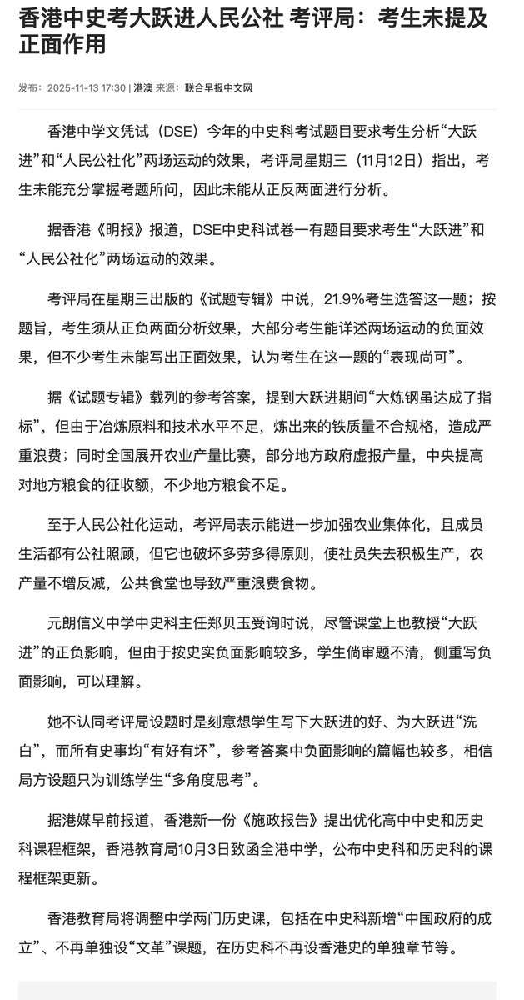

第1个就是人工修了许多水利设施出来，包括你像北方现在很多井，很多人工湖，都是那个时候凿出来的
第2个就是社会保障，比如赤脚医生，免费教育
第3个通过开办公共食堂、托儿所、幼儿园等，目标是将妇女从繁重的家务劳动（如做饭、带孩子）中解放出来，使其能够和男性一样全职参与到农业和工业生产中。

第2个就是社会保障，比如赤脚医生，免费教育
第3个通过开办公共食堂、托儿所、幼儿园等，目标是将妇女从繁重的家务劳动（如做饭、带孩子）中解放出来，使其能够和男性一样全职参与到农业和工业生产中。

香港中史考「大跃进人民公社」，考评局：考生未提及正面作用
11月12日，香港考评局发布《试题专辑》，点名今年中学文凭试（DSE）中史科考题出现“考生多写负面、未写正面”的情况。
试题要求考生分析“大跃进”和“人民公社化”运动的“效果”，按题旨必须从正反两面作答。 https://t.co/6l6kTGUNUB
11月12日，香港考评局发布《试题专辑》，点名今年中学文凭试（DSE）中史科考题出现“考生多写负面、未写正面”的情况。
试题要求考生分析“大跃进”和“人民公社化”运动的“效果”，按题旨必须从正反两面作答。 https://t.co/6l6kTGUNUB